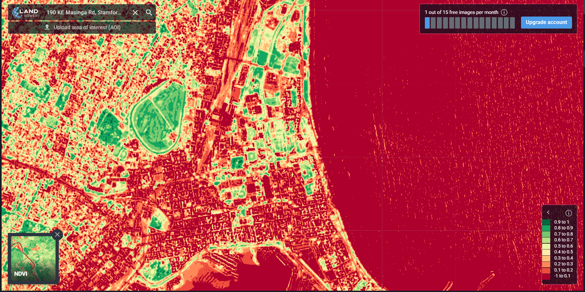
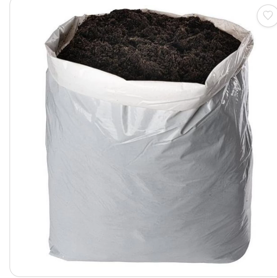

🌾 Welcome to Seed-to-Harvest!
I'm your AI-powered farming assistant. Using satellite imagery (Sentinel-2 & Landsat 8) and NDVI analysis, I provide real-time crop health insights.
Please select your preferred language:
🇬🇧 Type "English" for English
🇿🇦 Type "Zulu" for isiZulu
✅ Language set to English.
📍 Please share your GPS location or farm address to begin:
"Register my farm" to start the registration process.
📍 Please enter your farm GPS coordinates or address (e.g., -26.2041, 28.0473 or 'Green Acres Farm, Limpopo'):
Green Acres Farm, Limpopo, South Africa
🌽 Great! Now please enter your crop type (e.g., maize, rice, wheat, cassava):
✅ Registration confirmed!
📍 GPS/Farm: Green Acres Farm, Limpopo, South Africa
🌽 Crop: Maize
🗺️ Location: Green Acres Farm, Limpopo, South Africa
🛰️ Analyzing Sentinel-2 & Landsat 8 imagery...
📊 Running NDVI analysis...
🛰️ Here's your farm from our satellite view (Sentinel-2/Landsat 8 NDVI analysis):
🌾 Satellite Image Analysis:

NDVI Analysis - Green: Healthy | Yellow: Stress | Brown: Poor Vegetation
✅ Sector A: Healthy vegetation → Optimal conditions. Continue current practices.
⚠️ Sector B: Moderate vegetation stress → Nitrogen deficiency detected. Apply fertilizer.
🔴 Sector C: Poor vegetation → Immediate action required. Soil moisture low, urgent intervention needed.
🌱 Growth Stage Alert (Decision Engine): Sector B requires Urea fertilizer.
📌 Recommendation: Apply 50kg per hectare. Mix with water, apply evenly around plant base.

📊 Current Growth Stage: Growth
🔍 NDVI Analysis: Sector B and C requires immediate attention.
🌱 Growth Stage Recommendations:
• Sector A: Maintain current practices
• Sector B: Apply Urea fertilizer (50kg/ha)
• Sector C: Urgent irrigation + compost application needed